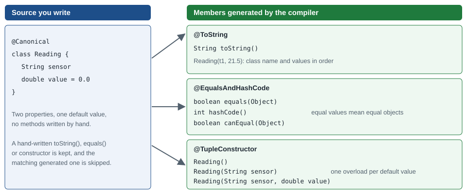

AST Transformations: Code Generation & Class Design
|
This content was generated with the assistance of AI and should be verified against the official documentation before being relied on in production. |
This page is written against Apache Groovy 6.0 (6.0.0, 2026-09-22) and every example was run with Groovy 6.0.0 on JDK 26
(checked on 2026-10-14). An AST transformation is a compiler plug-in triggered by an annotation: while the class is being
compiled, the transformation rewrites its syntax tree and adds fields, methods, constructors or interfaces, so the boilerplate
that Java programmers write or generate with an IDE is simply never written. The transformations here are all local ones,
bundled in the Groovy core, and they cover two jobs: generating the members every data class needs, and shaping how a class is
built, shared and called. The declarative-safety, logging, concurrency and compiler-directive transformations are on
AST Transformations: Logging, Safety, Concurrency & Directives,
and how to write your own is on
Writing AST Transformations & Macros. Java records
(Groovy’s own record) are on Records & Sealed Types, and the
properties these transformations read are explained on
Classes, Fields & Properties.
Most of the annotations share option names: includes and excludes choose properties, includeFields adds fields,
includeSuper and callSuper involve the parent class, and includeNames or defaults change the shape of the generated
code. Because the output is ordinary bytecode, it can be seen with reflection, and the examples below do that rather than
trusting the documentation. Unless an example imports something else, groovy.transform.* is imported.
Generating the data-class members
@ToString
@ToString adds a toString() that lists the property values. The name of the class is included, the package is included
unless includePackage = false, names can be switched on with includeNames, and includeSuper and includeFields add the
parent’s text and the non-property fields.
import groovy.transform.*
@ToString(includeNames = true, excludes = ['notes'], includePackage = false)
class Bed {
String crop
int plants
String notes
}
println new Bed(crop: 'basil', plants: 12, notes: 'north')
@ToString(includeSuper = true, includeFields = true)
class Tray extends Bed { private int slots = 6 }
println new Tray(crop: 'mint', plants: 3)Bed(crop:basil, plants:12)
Tray(6, Bed(crop:mint, plants:3))@EqualsAndHashCode
@EqualsAndHashCode generates equals, hashCode and a canEqual helper, all driven by the properties, so two instances
with the same values are equal and can be used as map keys. Without it a Groovy class keeps Java’s identity equality (the
== operator calls equals; see Operators: Arithmetic, Relational & Logical).
import groovy.transform.*
@EqualsAndHashCode
class Sensor { String id; double reading }
def a = new Sensor(id: 's1', reading: 1.5)
def b = new Sensor(id: 's1', reading: 1.5)
assert a == b && !a.is(b)
assert a.hashCode() == b.hashCode()
assert [a].contains(b)
@EqualsAndHashCode(includes = 'id')
class Zone { String id; String label }
assert new Zone(id: 'z1', label: 'a') == new Zone(id: 'z1', label: 'b')
println Sensor.declaredMethods*.name.findAll { it in ['equals', 'hashCode', 'canEqual'] }.sort()[canEqual, equals, hashCode]@TupleConstructor
@TupleConstructor generates a positional constructor with one parameter per property, in declaration order. Properties with
a default value make the trailing parameters optional, which the compiler expresses as one overload per optional parameter.
includes and excludes select properties, defaults = false removes the optional overloads, and callSuper with
includeSuperProperties extends the signature with the parent’s properties first.
import groovy.transform.*
@TupleConstructor @ToString
class Plot { String name; int rows = 4; int cols = 2 }
println new Plot('p1')
println new Plot('p1', 8)
println new Plot('p1', 8, 3)
println Plot.constructors.collect { it.parameterCount }.sort()
@TupleConstructor(includes = ['cols'], defaults = false)
class OnlyCols { int cols; String name }
println new OnlyCols(5).cols
@TupleConstructor(callSuper = true, includeSuperProperties = true)
class Sub extends Plot { String extra = 'x' }
def s = new Sub('p2', 1, 1, 'y')
println "${s.name} ${s.rows} ${s.cols} ${s.extra}"Plot(p1, 4, 2)
Plot(p1, 8, 2)
Plot(p1, 8, 3)
[0, 1, 2, 3]
5
p2 1 1 y@MapConstructor
@MapConstructor generates a constructor taking a Map. Groovy’s own new Probe(id: 'p', depth: 9) call already works on
classes with a no-argument constructor by setting properties after construction; the annotation matters when the properties
are final, or the class must be built through a single constructor, or when Java code needs a real map-taking constructor.
import groovy.transform.*
@MapConstructor
class Probe { final String id; final int depth }
def p = new Probe([id: 'p', depth: 9])
println "${p.id} ${p.depth}"
println Probe.constructors.collect { it.parameterTypes*.simpleName }p 9
[[Map]]@Canonical
@Canonical bundles the three previous transformations: it is an annotation collector that applies @ToString,
@EqualsAndHashCode and @TupleConstructor with their defaults. It adds no code of its own. Each of the three skips generation
when the class already declares the method, so a hand-written toString() wins. The options of the three are accepted
on @Canonical as well.

import groovy.transform.*
@Canonical
class Reading { String sensor; double value = 0.0 }
def r = new Reading('t1', 21.5)
println r
assert r == new Reading(sensor: 't1', value: 21.5)
assert new Reading('t1').value == 0.0
println Reading.declaredMethods.findAll { !it.synthetic }*.name.sort().unique()
println Reading.declaredConstructors.collect { it.parameterTypes*.simpleName }.sort { it.size() }
@Canonical
class Custom {
String x
String toString() { 'mine' }
}
println new Custom('q')Reading(t1, 21.5)
[canEqual, equals, getMetaClass, getSensor, getValue, hashCode, setMetaClass, setSensor, setValue, toString]
[[], [String], [String, double]]
mineThe generated canEqual and the pair of MetaClass accessors in the list belong to @EqualsAndHashCode and to every Groovy
class respectively. The excludes option of @Canonical is passed to all three annotations, so it also removes the property
from the constructor, which is easy to miss:
import groovy.transform.*
@Canonical(excludes = 'value')
class Tag { String sensor; double value }
println new Tag('a')
println new Tag(sensor: 'a', value: 5).value
try {
new Tag('a', 1)
} catch (e) {
println e.message.readLines()[0]
}Tag(a)
5.0
Could not find matching constructor for: Tag(String, Integer)@InheritConstructors
Groovy constructors are not inherited, as in Java. @InheritConstructors copies every constructor of the superclass into the
subclass, each delegating to super. It is most useful when extending exception classes and other classes with many
constructors.
import groovy.transform.*
class Base {
String name
Base(String n) { name = n }
Base(String n, int k) { name = n * k }
}
@InheritConstructors
class Child extends Base { }
println new Child('ab').name
println new Child('ab', 2).name
@InheritConstructors
class ChannelException extends IllegalStateException { }
println new ChannelException('closed').messageab
abab
closed@Category
@Category(Target) turns a class into a category: its instance methods are rewritten as static methods taking the target as
the first parameter, so that inside the class this is the target object. A category is activated with the use block. The
categories mechanism itself, its scoping and its alternatives are on
Metaclasses, ExpandoMetaClass & Categories.
import groovy.transform.*
@Category(String)
class Shout {
String shout() { toUpperCase() + '!' }
}
use(Shout) { println 'hey'.shout() }
println Shout.declaredMethods.find { it.name == 'shout' }.parameterTypes*.simpleNameHEY!
[String]@IndexedProperty
A property holding a list or an array gets its normal getter and setter. @IndexedProperty adds the JavaBeans indexed accessors
getName(int) and setName(int, value) that bean-aware frameworks look for.
import groovy.transform.*
class Matrixish {
@IndexedProperty List<String> names = ['a', 'b']
@IndexedProperty String[] codes = new String[2]
}
def m = new Matrixish()
m.setCodes(0, 'A')
m.setCodes(1, 'B')
println m.getCodes(1)
m.setNames(0, 'y')
println m.getNames(0)
println Matrixish.declaredMethods*.name.findAll { it =~ /^(get|set)(Names|Codes)$/ }.sort()B
y
[getCodes, getCodes, getNames, getNames, setCodes, setCodes, setNames, setNames]@Lazy
@Lazy on a field replaces the initialiser with a lazily evaluated, thread-safe one: the right-hand side runs on the first
read, and the field is stored under a $-prefixed name. With soft = true the value is held through a soft reference so the
JVM may drop and recompute it under memory pressure.
import groovy.transform.*
class Beds {
static int loads = 0
@Lazy List<String> crops = { loads++; ['basil', 'mint'] }()
@Lazy(soft = true) String big = 'x' * 5
}
def b = new Beds()
println Beds.loads
println b.crops
println b.crops
println Beds.loads
println Beds.declaredFields*.name.findAll { it.contains('crops') || it.contains('big') }.sort()0
[basil, mint]
[basil, mint]
1
[$big, $crops]@Newify
@Newify lets code construct objects without the new keyword, in two styles: @Newify([Hose]) makes Hose(...) a
constructor call for the listed classes (a Python-like style), and a bare @Newify enables Hose.new(...) (a Ruby-like
style). It applies to the annotated class, method or script scope and can make tree-building code easier to read.
import groovy.transform.*
class Hose {
String id
Hose(String id) { this.id = id }
String toString() { "Hose($id)" }
}
@Newify([Hose])
def make() { [Hose('a'), Hose('b')] }
println make()
@Newify
def make2() { [Hose.new('c')] }
println make2()[Hose(a), Hose(b)]
[Hose(c)]@Sortable
@Sortable makes a class Comparable by comparing its properties in declaration order, and adds one static
comparatorByXxx() method per property. includes and excludes choose and order the participating properties.
import groovy.transform.*
@Sortable(excludes = 'notes')
class Seed { String name; int year; String notes }
def seeds = [
new Seed(name: 'mint', year: 2024),
new Seed(name: 'basil', year: 2025),
new Seed(name: 'basil', year: 2023)
]
println seeds.sort(false)*.with { "$name $year" }
println seeds.sort(false, Seed.comparatorByYear())*.year
println Seed.declaredMethods*.name.findAll { it.startsWith('comparator') }.sort()
println Seed.interfaces*.simpleName
@Sortable(includes = ['year', 'name'])
class Seed2 { String name; int year }
println([new Seed2(name: 'b', year: 1), new Seed2(name: 'a', year: 1), new Seed2(name: 'z', year: 0)].sort()*.name)[basil 2023, basil 2025, mint 2024]
[2023, 2024, 2025]
[comparatorByName, comparatorByYear]
[Comparable, GroovyObject]
[z, a, b]@Builder and its strategies
@Builder generates a fluent builder, and its builderStrategy option picks the shape. The annotation lives in
groovy.transform.builder together with the strategies, which are classes passed to the option.
| Strategy | What it produces |
|---|---|
|
A static |
|
Chained setters on the class itself, optionally with a |
|
A builder class that you declare, annotated with |
|
A type-safe initialiser used with |
import groovy.transform.*
import groovy.transform.builder.*
@Builder
class Pot { String name; int litres }
def p = Pot.builder().name('clay').litres(5).build()
println "${p.name} ${p.litres}"
@Builder(builderStrategy = ExternalStrategy, forClass = Pot)
class PotBuilder { }
def p2 = new PotBuilder().name('tin').litres(2).build()
println "${p2.name} ${p2.litres}"
@Builder(builderStrategy = SimpleStrategy, prefix = 'with')
class Label { String text; int size }
def l = new Label().withText('hi').withSize(3)
println "${l.text} ${l.size}"
@Builder(builderStrategy = DefaultStrategy, builderClassName = 'Maker', builderMethodName = 'maker',
buildMethodName = 'create', prefix = 'set')
class Gadget { String id }
println Gadget.maker().setId('g').create().id
@Builder(builderStrategy = InitializerStrategy)
class Point { int x; int y }
@CompileStatic
def mk() { new Point(Point.createInitializer().x(1).y(2)) }
def pt = mk()
println "${pt.x},${pt.y}"clay 5
tin 2
hi 3
g
1,2@Builder can also annotate a method or a constructor, in which case the builder collects that member’s parameters instead of
the class’s properties. In that position includes and excludes are not allowed (the compiler reports "includes/excludes only
allowed on classes").
import groovy.transform.builder.*
class Mixed {
String a
int b
@Builder
static Mixed of(String a, int b) { new Mixed(a: a, b: b) }
}
println Mixed.builder().a('q').b(4).build().b4@AutoImplement
@AutoImplement supplies a body for every abstract method the class inherits and does not implement. By default a method
returns the default value of its return type (null, 0, false); exception and message make it throw instead, and
code provides a closure used as the body. It is convenient for test doubles.
import groovy.transform.*
interface Waterer { void water(int ml); String name(); int level() }
@AutoImplement
class Dummy implements Waterer { }
def d = new Dummy()
println d.name()
println d.level()
d.water(3)
@AutoImplement(exception = UnsupportedOperationException, message = 'not yet')
class Strict implements Waterer { }
try { new Strict().water(1) } catch (e) { println "${e.class.simpleName}: ${e.message}" }
interface Gauge { int level(); int max() }
@AutoImplement(code = { 42 })
class Fixed implements Gauge { }
println new Fixed().level()null
0
UnsupportedOperationException: not yet
42@NullCheck
@NullCheck inserts a guard at the top of a method or constructor that throws IllegalArgumentException when a reference
parameter is null. On a class it covers every method and constructor of that class. A constructor produced by another
transformation is checked only with includeGenerated = true, because the order in which the transformations run would
otherwise leave it unguarded.
import groovy.transform.*
@NullCheck
class Valve {
String id
Valve(String id) { this.id = id }
void set(String v) { id = v }
}
try { new Valve(null) } catch (e) { println "${e.class.simpleName}: ${e.message}" }
try { new Valve('a').set(null) } catch (e) { println "${e.class.simpleName}: ${e.message}" }
@NullCheck
@TupleConstructor
class V2 { String a }
try { new V2(null); println 'no check' } catch (e) { println e.message }
@NullCheck(includeGenerated = true)
@TupleConstructor
class V3 { String a }
try { new V3(null); println 'no check' } catch (e) { println e.message }IllegalArgumentException: id cannot be null
IllegalArgumentException: v cannot be null
no check
a cannot be null@POJO and @RecordType
@POJO (in the groovy.transform.stc package) asks the compiler to leave out the GroovyObject plumbing from a class that is
compiled statically, so the class is a plain Java object with no getMetaClass/setMetaClass. It takes effect together with
@CompileStatic; on a dynamic class the interface is still added.
@RecordType turns a class into a record: with the default RecordTypeMode.AUTO it becomes a real java.lang.Record on JDK
16+ and, with EMULATE, a class that imitates the record API on older runtimes. It adds a tuple constructor, toString, and
component accessors such as x(). Real record declarations are on
Records & Sealed Types; @RecordType is for the case where the
data class is already written with properties.
import groovy.transform.*
import groovy.transform.stc.POJO
@POJO @CompileStatic @ToString
class Plain { String name; int n }
println new Plain(name: 'x', n: 1)
println Plain.interfaces*.simpleName
@ToString
class Normal { String name }
println Normal.interfaces*.simpleName
@RecordType
class Coord { int x; int y }
def c = new Coord(1, 2)
println c
println Coord.isRecord()
println Coord.superclass.simpleName
println c.x()
@RecordType
@RecordOptions(mode = RecordTypeMode.EMULATE)
class Emu { int x }
println Emu.isRecord()
println new Emu(3)Plain(x, 1)
[]
[GroovyObject]
Coord[x=1, y=2]
true
Record
1
false
Emu[x=3]Source: Groovy API: RecordType
@NamedVariant
@NamedVariant generates an overload of a method or constructor that takes its parameters as named arguments, which is the
Groovy call style, while keeping the positional original. Without @NamedParam every parameter becomes a named argument; once some parameters are annotated, only the annotated ones
are named (and can be required) and the rest stay positional. A missing required name is reported at the call.
import groovy.transform.*
@NamedVariant
String describe(String crop, int plants = 1) { "$crop x $plants" }
println describe(crop: 'basil', plants: 4)
println describe('mint', 2)
println describe(crop: 'sage')
@NamedVariant
String des2(@NamedParam(required = true) String crop, @NamedParam String note, int other) {
"$crop $note $other"
}
println des2(crop: 'a', note: 'b', 7)
try { des2(note: 'b', 7) } catch (AssertionError e) { println e.message.readLines()[0] }basil x 4
mint x 2
sage x 1
a b 7
Missing required named argument 'crop'. Keys found: [note]. Expression: namedArgs.containsKey(crop)Source: Groovy API: NamedVariant
@OperatorRename
Groovy maps operators to methods (` calls `plus`), so a class from a library whose method has a different name cannot be
used with the operator. `@OperatorRename` renames the mapping inside the annotated code, here pointing ` at add. It
adapts third-party types to the operators without changing them. The operator-to-method
table is on Operator Overloading.
import groovy.transform.*
class Vec {
int v
Vec(int v) { this.v = v }
Vec add(Vec o) { new Vec(v + o.v) }
String toString() { "Vec($v)" }
}
@OperatorRename(plus = 'add')
def calc() { new Vec(1) + new Vec(2) }
println calc()Vec(3)Source: Groovy API: OperatorRename
Class design
@Delegate
@Delegate on a field or property exposes the delegate’s public methods on the owning class, each forwarding to the held
object, and makes the class implement the delegate’s interfaces. This is composition without writing the forwarding methods.
interfaces = false suppresses the interface implementation, excludes and includes filter methods, and deprecated = true
also forwards @Deprecated ones.
import groovy.transform.*
class Engine { int starts; void start() { starts++ }; int rpm() { 900 } }
class Tractor {
@Delegate Engine engine = new Engine()
String name = 'T1'
}
def t = new Tractor()
t.start()
t.start()
println t.engine.starts
println t.rpm()
println Tractor.declaredMethods*.name.findAll { it in ['start', 'rpm'] }.sort()
class Team {
@Delegate List<String> members = []
}
def tm = new Team()
tm << 'ana'
tm.add('bo')
println tm.size()
println tm instanceof List
interface Pump { void run() }
class P1 implements Pump { void run() { println 'p1' } }
class Owner { @Delegate(interfaces = false) P1 p = new P1() }
println Owner.interfaces*.simpleName
new Owner().run()2
900
[rpm, start]
2
true
[GroovyObject]
p1@Immutable and copyWith
@Immutable makes a class’s state unchangeable: it makes the class and fields final, drops the setters, generates
toString, equals, hashCode and the constructors, and defends the state with copies. Mutable members get defensive copies on construction and on reading (dates and
arrays are cloned, collections are wrapped read-only), and an unsupported type in a property is rejected when the class
is constructed. copyWith = true adds a copyWith(Map) method that returns a modified copy.
import groovy.transform.*
@Immutable
class Seed { String name; int year; List<String> tags; Date harvested }
def d = new Date(0)
def s = new Seed('basil', 2026, ['a', 'b'], d)
println "${s.name} ${s.year} ${s.tags} ${s.harvested.time}"
try { s.name = 'x' } catch (e) { println e.class.simpleName }
try { s.tags << 'c' } catch (e) { println e.class.simpleName }
println s.harvested.is(s.harvested)
d.time = 5000
println s.harvested.time
println java.lang.reflect.Modifier.isFinal(Seed.getModifiers())
println Seed.declaredFields.findAll { !it.synthetic }.collect { "${it.name}:${java.lang.reflect.Modifier.isFinal(it.modifiers)}" }
@Immutable(copyWith = true)
class Pt { int x; int y }
def p = new Pt(1, 2)
def q = p.copyWith(y: 9)
println "$p $q"
println p.is(p.copyWith(x: 1))basil 2026 [a, b] 0
ReadOnlyPropertyException
UnsupportedOperationException
false
0
true
[name:true, year:true, tags:true, harvested:true]
Pt(1, 2) Pt(1, 9)
trueA property whose type the transformation does not recognise as immutable is refused at construction. The type can be
declared safe with knownImmutableClasses on @Immutable, or the class itself marked with @KnownImmutable, covered below.
An immutable class gets a no-argument constructor, a map constructor and the full tuple constructor; default values fill
properties that the map omits, and the constructor list printed by the last example shows that no overload for a partially
filled positional argument list is generated.
import groovy.transform.*
class Thing { }
try {
new GroovyShell().evaluate '''
@groovy.transform.Immutable class Bad { Thing t }
class Thing {}
new Bad(new Thing())'''
} catch (e) {
println e.class.simpleName
println e.message.readLines()[0]
}
@Immutable(knownImmutableClasses = [java.io.File])
class Holder { File f }
println new Holder(new File('a')).f
@Immutable
class Hose {
String id
int length = 10
}
println new Hose('h', 10)
println new Hose(id: 'h2')
println Hose.constructors.collect { it.parameterTypes*.simpleName }RuntimeException
Unsupported type (Thing) found for field 't' while constructing immutable class Bad.
a
Hose(h, 10)
Hose(h2, 10)
[[], [Map], [String, int]]@Memoized
@Memoized caches the results of a method keyed by its arguments, so a repeat call with the same arguments returns the stored
value without running the body. maxCacheSize bounds the cache (evicting least-recently used entries), and protectedCacheSize
keeps a number of entries safe from garbage collection. The method must be a side-effect-free function of its arguments to be a
good candidate. A method with no parameters is cached once. The closure-level equivalent is on
Functional Programming.
import groovy.transform.*
class Calc {
static int runs = 0
@Memoized int slow(int n) { runs++; n * n }
@Memoized(maxCacheSize = 2) int bounded(int n) { runs++; n }
@Memoized String name() { runs++; 'x' }
}
def c = new Calc()
c.slow(3); c.slow(3); c.slow(4)
println Calc.runs
Calc.runs = 0
c.bounded(1); c.bounded(2); c.bounded(3); c.bounded(1)
println Calc.runs
Calc.runs = 0
c.name(); c.name()
println Calc.runs
println Calc.declaredMethods*.name.findAll { it.contains('slow') }.sort()2
4
1
[memoizedMethodPriv$slowint, slow]@TailRecursive
The JVM does not remove tail calls, so a deep recursion throws StackOverflowError. @TailRecursive rewrites a method whose
recursive call is in tail position into a loop. The method must be a real tail call: the recursive call is the last thing
evaluated, with nothing left to do with its result.
import groovy.transform.*
@TailRecursive
long sum(long n, long acc = 0) { n == 0 ? acc : sum(n - 1, acc + n) }
println sum(100000)
def plain
plain = { long n, long acc -> n == 0 ? acc : plain(n - 1, acc + n) }
try { plain(100000, 0) } catch (StackOverflowError e) { println 'StackOverflowError' }
@TailRecursive
int fact(int n, int acc = 1) { n <= 1 ? acc : fact(n - 1, acc * n) }
println fact(10)5000050000
StackOverflowError
3628800The closure version overflows because only methods are rewritten. Closures can use trampoline() instead, described on
Functional Programming.
@Singleton
@Singleton makes the constructor private and adds a static instance property. By default the instance is created when the
class loads; lazy = true creates it on first access, with double-checked locking. Explicit constructors are rejected unless
strict = false, which lets the class declare its own.
import groovy.transform.*
@Singleton
class Registry { final List<String> items = [] }
Registry.instance.items << 'a'
println Registry.instance.items
assert Registry.instance.is(Registry.instance)
try { new Registry() } catch (e) { println e.class.simpleName + ': ' + e.message }
@Singleton(lazy = true)
class LazyReg {
static int created = 0
int seq = ++created
}
println LazyReg.created
LazyReg.instance
println LazyReg.created
@Singleton(strict = false)
class Loose {
String tag
Loose() { tag = 'custom ctor' }
}
println Loose.instance.tag
println new Loose().tag[a]
RuntimeException: Can't instantiate singleton Registry. Use Registry.instance
0
1
custom ctor
custom ctor@KnownImmutable
@KnownImmutable declares that a class is immutable without making it so: it is a marker that tells @Immutable that a
property of that type needs no defensive copy and is not an unsupported type. Use it on your own value classes that the transformation cannot prove
immutable (for example ones with a final field of a type it does not recognise).
import groovy.transform.*
@KnownImmutable
class Frozen {
final String v
Frozen(String v) { this.v = v }
}
@Immutable
class UsesFrozen { Frozen f }
println new UsesFrozen(new Frozen('a')).f.vaChoosing between them
| Need | Use |
|---|---|
A plain value class |
|
A value class that cannot change |
|
A fluent construction API |
|
Reuse by composition |
|
A cache or a deep recursion |
|
One shared instance |
|
Where the book is outdated
The book this guide was checked against, the first edition of Groovy in Action, covers Groovy 1.0 and predates every
transformation on this page: AST transformations arrived in Groovy 1.6. According to the official release notes, the set then
grew release by release: @Delegate, @Immutable, @Lazy, @Singleton and @Mixin in 1.6; @TupleConstructor and
@Canonical in 1.8; @Memoized in 2.2; @Builder and @Sortable in 2.3; @MapConstructor, @AutoImplement and
@NamedVariant in 2.5; @NullCheck in 3.0; and @RecordType and @POJO in 4.0. @POJO and @RecordType only make sense
against modern JDKs. The early transformations also gained options over time (for example copyWith on @Immutable), so
option lists in older texts written for Groovy 1.x and 2.x are incomplete. @Mixin is deprecated in favour of traits.